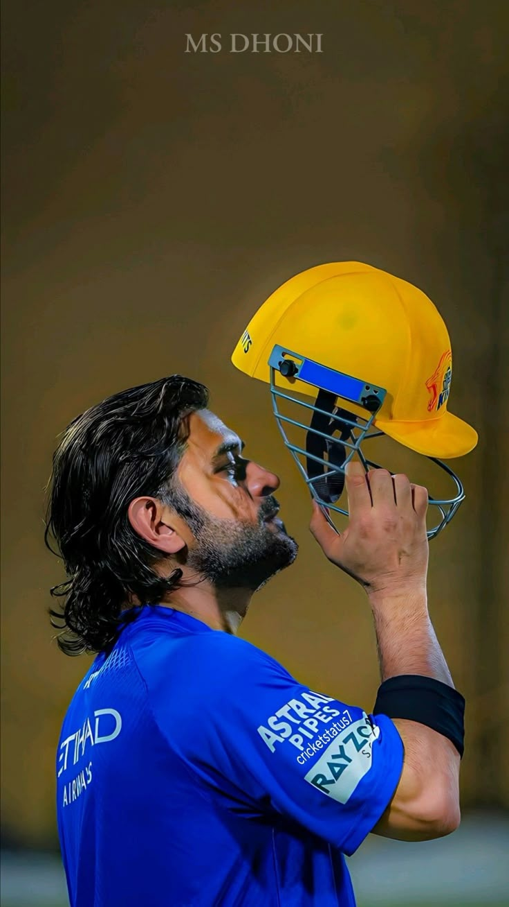
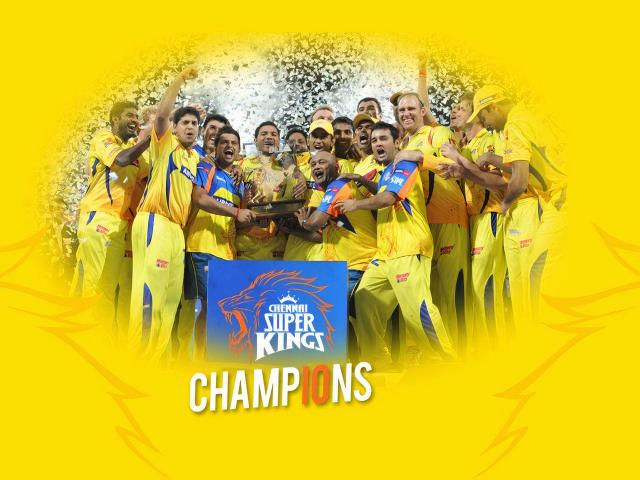
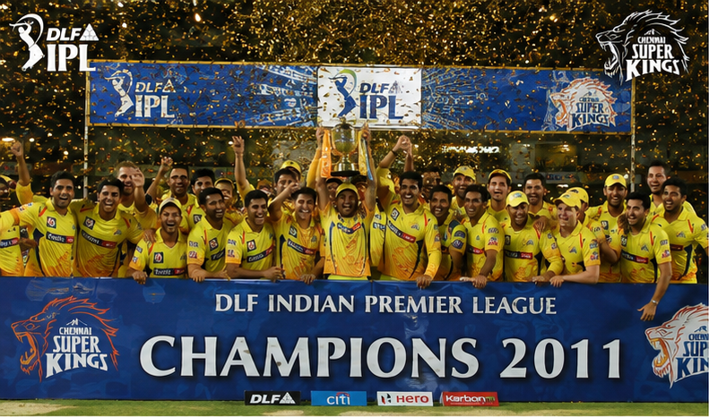
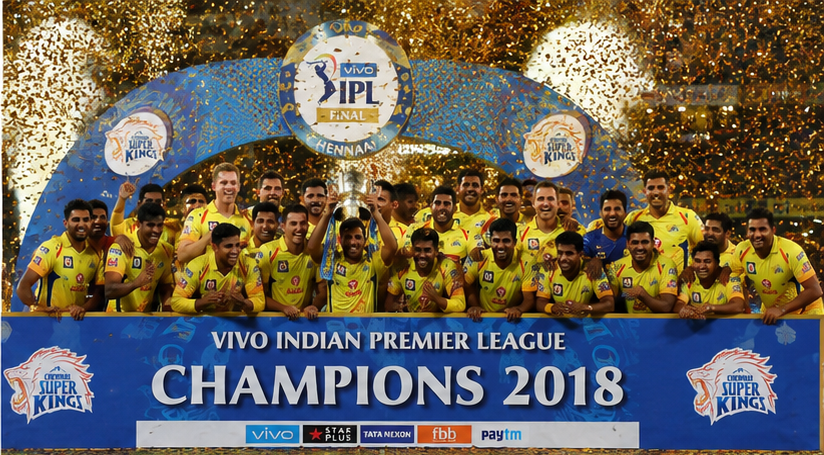
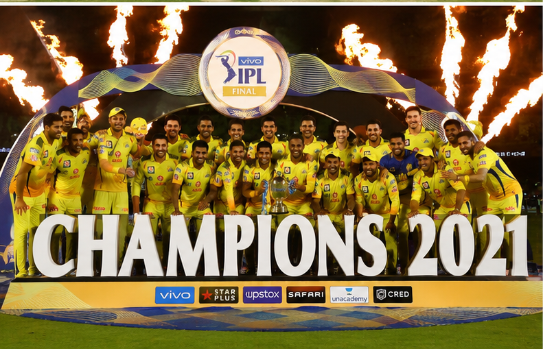
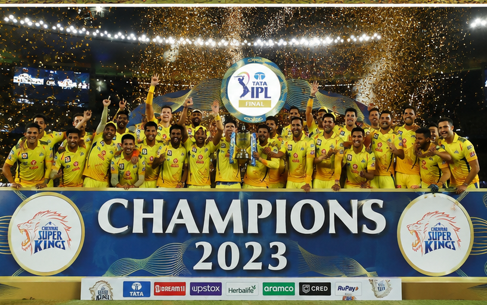
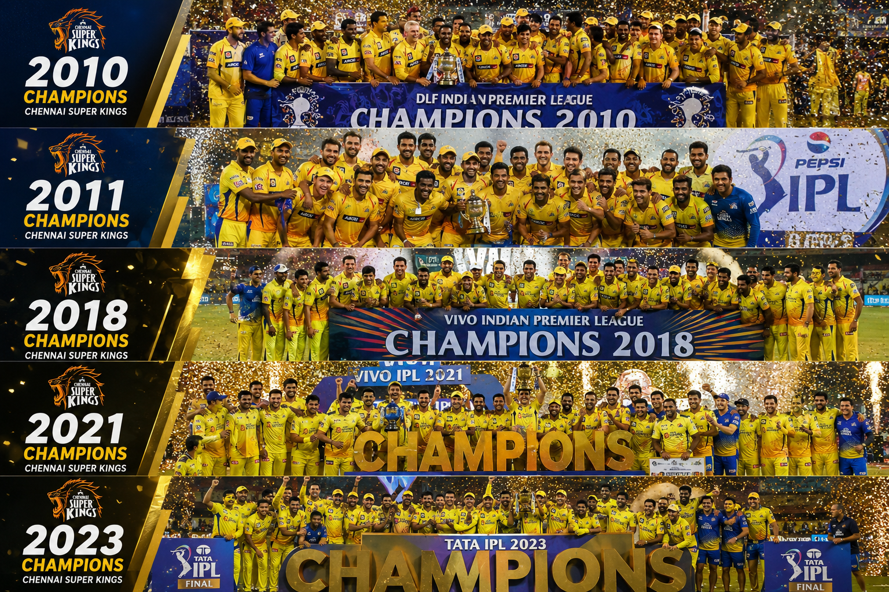

Chennai Super Kings (CSK) is one of the most successful and loved teams in the Indian Premier League (IPL). Founded in 2008, CSK is known for its strong teamwork, consistency, and passionate fan base called the “Yellow Army.” Led for many years by legendary captain MS Dhoni, CSK has won multiple IPL championships and created unforgettable cricket moments. The team represents passion, hard work, and never-give-up spirit. With iconic players, thrilling matches, and loyal fans, CSK continues to inspire millions of cricket lovers around the world.






